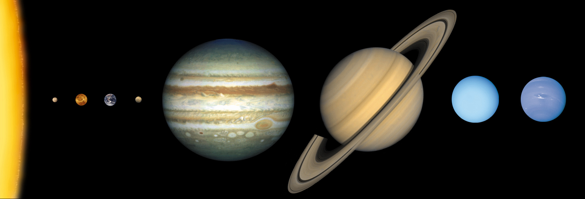

1html>
<head>
<title>Solar System</title>
</head>
<body style="background: #000">

<div id="phase1">
<!-- Select planet  -->
   
   <div id="description" style="text-align:center; color: #fff; font-size: 50;">Select a planet to explore</div>
</div>

<div id="phase2" style="display:none; height: 100%;">
<!-- Countdown -->
   <div id="countdown_timer" style="font-size:500; color:#fff; margin:auto; text-align:center; position: absolute; top: 50%; left: 50%; -ms-transform: translate(-50%, -50%); transform: translate(-50%, -50%);">10</div>
</div>

<div id="phase3" style="display:none; height: 100%; background-image: url('rocket_launch.gif'); background-position: center; background-repat: no-repeat; background-size: cover;">
<!-- Blast Off -->
<!-- TODO: add some shake -->
   <div id="countdown_timer" style="font-size:350; color:#000; margin:auto; text-align:center; position: absolute; top: 50%; left: 50%; -ms-transform: translate(-50%, -50%); transform: translate(-50%, -50%);">LIFT<br/>OFF</div>
</div>

<div id="phase4" style="display:none; height: 100%; background-image: url('loop-warp.gif'); background-position: center; background-repat: no-repeat; background-size: cover;"><!-- Flight --></div>

<div id="phase5" style="display:none; height: 100%;">
<!-- Orbit -->
   <model-viewer
      auto-rotate
      camera-controls
      id="planet_model"
      background-color="black"
      camera-orbit="0deg 60deg 1.5m"
      shadow-intensity='0'
      stage-light-intensity='0.5'
      style="width:100%;height:100%">
   </model-viewer>
   <script src='https://unpkg.com/@google/model-viewer@0.3.1/dist/model-viewer.js' type='module'></script>
   <script nomodule src='https://unpkg.com/@google/model-viewer@0.3.1/dist/model-viewer-legacy.js'></script>
   <div style="position:fixed; left:0; bottom:0; width:100%; background-color: #eee; color: #000; text-align: center; font-size: 50" onclick="start_phase7()">Land on planet</div>
</div>

<div id="phase6" style="display:none; height: 100%;"><!-- Landing --></div>

<div id="phase7" style="display:none; height: 100%; background-image: url('tricorder.jpg'); background-position: center; background-repat: no-repeat; background-size: cover;">
<!-- Explore -->
<div id="pt-hydrogen" style="display:none;font-size:100">Hydrogen</div>
<div id="pt-nickel" style="display:none;font-size:100">Nickel</div>
<div id="pt-barium" style="display:none;font-size:100">Barium</div>
   <div id="phase7launch" style="display:none; position:fixed; left:0; bottom:0; width:100%; background-color: #eee; color: #000; text-align: center; font-size: 50" onclick="start_phase1()">Return to Orbit</div>
</div>
<div id="phase8" style="display:none; height: 100%;"><!-- Prepare to leave orbit --></div>

<script>
/*
 * Note that this code is very function based, so may eventually overflow the stack
 * with function calls. May need to refactor this some time in the future.
 */


// what is our target planet
var target_planet = "Earth";

<!-- Phase 1: Solar System -->
document.getElementById("solar_system").addEventListener('mouseout', e=>{
   document.getElementById("description").innerHTML = "Select a planet to explore";
});

document.getElementById("solar_system").addEventListener('mousemove', e=>{

   // original width
   var ow = document.getElementById("solar_system").naturalWidth;
   // current width
   var cw = document.getElementById("solar_system").width;
   // size ratio
   var ratio = ow/cw;
   var planetary_body = "";
   var x=e.x * ratio;

   if (x<130) {
      // Sun
      planetary_body = "Sol (The Sun)";
   } else if (x<215) {
      // Mercury
      planetary_body = "Mercury";
   } else if (x<310) {
      // Venus
      planetary_body = "Venus";
   } else if (x<415) {
      // Earth
      planetary_body = "Earth";
   } else if (x<500) {
      //Mars 
      planetary_body = "Mars";
   } else if (x<1010) {
      // Jupiter
      planetary_body = "Jupiter";
   } else if (x<1450) {
      // Saturn
      planetary_body = "Saturn";
   } else if (x<1680) {
      // Uranus
      planetary_body = "Uranus";
   } else {
      // Neptune
      planetary_body = "Neptune";
   }

   document.getElementById("description").innerHTML = planetary_body;
});

document.getElementById("solar_system").addEventListener('click', e=>{

   // original width
   var ow = document.getElementById("solar_system").naturalWidth;
   // current width
   var cw = document.getElementById("solar_system").width;
   // size ratio
   var ratio = ow/cw;
   var planetary_body = "";
   var x=e.x * ratio;

   if (x<130) {
      // Sun
      planetary_body = "the Sun";
   } else if (x<215) {
      // Mercury
      planetary_body = "Mercury";
   } else if (x<310) {
      // Venus
      planetary_body = "Venus";
   } else if (x<415) {
      // Earth
      planetary_body = "Earth";
   } else if (x<500) {
      //Mars 
      planetary_body = "Mars";
   } else if (x<1010) {
      // Jupiter
      planetary_body = "Jupiter";
   } else if (x<1450) {
      // Saturn
      planetary_body = "Saturn";
   } else if (x<1680) {
      // Uranus
      planetary_body = "Uranus";
   } else {
      // Neptune
      planetary_body = "Neptune";
   }

   // set our global target planet to be the selected planet
   target_planet = planetary_body;

   start_phase2();
});

function start_phase1() {
   console.log("entered start_phase1");
   switch_phase(1);
}

<!-- Phase 2: Countdown -->
function start_phase2() {
   console.log("entered start_phase2");
   switch_phase(2);


   document.getElementById("countdown_timer").innerHTML = "READY";
   var countdown_value = 5;
   var timer = setInterval(function() {

      var message = new SpeechSynthesisUtterance(countdown_value);
      message.lang = "en-AU";  // I want my child to learn an Aussie accent!
      message.rate = 1.5;
      speechSynthesis.speak(message);
      document.getElementById("countdown_timer").innerHTML = countdown_value;

      countdown_value -= 1;
      if (countdown_value <= 0) { 
         // switch to phase 3
         clearInterval(timer);
         start_phase3();
      }

   },1000);
}

<!-- Phase 3: Blast Off/Lift Off -->
function start_phase3() {
   console.log("entered start_phase2");
   switch_phase(3);

   var message = new SpeechSynthesisUtterance("Lift Off! we have lift off! for our journey to "+ target_planet);
   message.lang = "en-AU";  // I want my child to learn an Aussie accent!
      message.rate = 0.8;
   speechSynthesis.speak(message);

   // 10 seconds
   var timer = setInterval(function() {
      clearInterval(timer);
      start_phase4();
   }, 10000);
}

<!-- Phase 4: Warp Speed/Flight-->
function start_phase4() {
   console.log("entered start_phase4");
   switch_phase(4);

   var message = new SpeechSynthesisUtterance("Engaging Warp Speed!");
   message.lang = "en-AU";  // I want my child to learn an Aussie accent!
      message.rate = 0.8;
   speechSynthesis.speak(message);

   // We load the planet model in this phase so it is ready to show in the orbit phase
   var planet_model="";
   switch(target_planet) {
      case "Sun":
         planet_model="Sun_1_1391000.glb"
         break;
      case "Mercury":
         planet_model="Mercury_1_4878.glb"
         break;
      case "Venus":
         planet_model="Venus_1_12103.glb"
         break;
      case "Earth":
         planet_model="Earth_1_12756.glb"
         break;
      case "Mars":
         planet_model="Mars_1_6792.glb"
         break;
      case "Jupiter":
         planet_model="Jupiter_1_142984.glb"
         break;
      case "Saturn":
         planet_model="Saturn_1_120536.glb"
         break;
      case "Uranus":
         planet_model="Uranus_1_51118.glb"
         break;
      case "Neptune":
         planet_model="Neptune_1_49528.glb"
         break;
   }
   document.getElementById("planet_model").src=planet_model;


   // 10 seconds of warp speed
   // TODO: asteroids, run in with other ships
   var timer = setInterval(function() {
      clearInterval(timer);
      start_phase5();
   }, 10000);
}

<!-- Phase 5: Orbit -->
function start_phase5() {
   console.log("entered start_phase5");
   switch_phase(5);

   // show the model viewer, which we loaded in phase4
   document.getElementById("planet_model").setAttribute('auto-rotate','');

   var message = new SpeechSynthesisUtterance("We have arrived at "+target_planet);
   message.lang = "en-AU";  // I want my child to learn an Aussie accent!
      message.rate = 0.8;
   speechSynthesis.speak(message);

   // I think it would be awesome to be able to control the model viewer using
   // buttons on the 'science station'. To control the pan, zoom, etc...

}

<!-- Phase 6: Landing -->
function start_phase6() {
   console.log("skipping phase6");
   start_phase7();

   // Phase 6 should use some of the simulator buttons to
   // 'control' flight down to the planet. For now, just 
   // go straight to the landing.
}

<!-- Phase 7: Exploration -->
function start_phase7() {
   console.log("entered start_phase7");
   switch_phase(7);

   var message = new SpeechSynthesisUtterance("We have landed on "+target_planet+". Grab your try-corder, and let's go exploring. What elements and molecules will we find on the planet, only you can find out. We can go visit another planet once you return from exploring. Good luck, have fun!");
   message.lang = "en-AU";  // I want my child to learn an Aussie accent!
      message.rate = 0.8;
   speechSynthesis.speak(message);

   // update the screen whenever an element is found
   // TODO: maybe show found elements in the periodic table
   // TODO: make the periodic table interactive
   var timer = setInterval(function() {
      var xhr = new XMLHttpRequest();
      // Setup our listener to process completed requests
      xhr.onload = function () {
         // Process our return data
         if (xhr.status >= 200 && xhr.status < 300) {
            // Runs when the request is successful
            var count = 0;
            j = JSON.parse(xhr.responseText);
            // TODO: some hard coded elements for now
            if (typeof j.nickel !== 'undefined') {
               document.getElementById("pt-nickel").style.display="block";
               count += 1;
            }
            if (typeof j.hydrogen !== 'undefined') {
               document.getElementById("pt-hydrogen").style.display="block";
               count += 1;
            }
            if (typeof j.barium !== 'undefined') {
               document.getElementById("pt-barium").style.display="block";
               count += 1;
            }

            // once we have found 3 elements, time to launch back into Space
            if (count==3) {
               document.getElementById("phase7launch").style.display="block";
            }

         }
      }
      xhr.open('GET', '/state');
      xhr.send();
   }, 2000);

}

<!-- Misc -->
function switch_phase(p) {
   var MAX_PHASE=8;
   // set phase2 div visible
   var ip = parseInt(p);
   for (var r=1; r<=MAX_PHASE; r++) {
      var style = "none";
      if (r==ip) {
         style = "block";
      }
      document.getElementById("phase"+r).style.display=style;
   }
}

<!-- Start the cockpit -->
start_phase1();

</script>
</body>
</html>
